Have you ever run into an issue where Autopilot Self-Deploying Mode had a major application installation delay? Jeroen Burgerhout reached out to me with a case like that. He was using Autopilot self-deploying mode, with a Shared PC configuration assigned through Intune. During the device phase of the Enrollment Status Page, the deployment spent roughly thirty minutes waiting before the required Win32 apps started installing.
Introduction
During the AutoPilot enrollment, I noticed that the Intune Management Extension (IME) was already installed, and its service was running. Yet the apps still hadn’t started installing. Eventually, after exactly 30 minutes of pure silence, app processing moved forward, all six applicable apps completed, and the deployment finished. But that still left an uncomfortable question: where had that half hour gone?
Seeing IME running made the delay particularly confusing. There is still work to do between starting the service and launching an app installer, including preparing the tracking information Windows uses for ESP.
That was where I wanted to start. Before changing an app or increasing the ESP timeout, I wanted to find out what IME was actually doing during that gap.
The IME logs helped identify where the time was disappearing, but they could only tell us so much. To see what Windows was doing during that wait, we also captured a Windows Performance Recorder trace. That let us follow the calls behind the delay and find out what was holding them up.
Finding the Autopilot Self-Deploying Mode Delay in the IME Logs
Before we start digging into what went wrong, we need to know WHEN it went wrong first. Without the exact timestamps, pinpointing a thirty-minute Autopilot Self-Deploying Mode app installation delay quickly becomes a guessing game.
So, let’s first build a timeline from the IME logs. We need to know when IME started waiting and when Win32 app processing continued. From there, we can line up the relevant Windows events.
The original deployment was recorded on October 29. All timestamps in this article are UTC, including the normalized log times. Local device time was one hour later.
In IntuneManagementExtension.log, the startup ESP provider query began at 09:15:33.781. The next relevant state message appeared at 09:24:39.121. Later provider updates did not finish logging until 09:34:39.341.
AppWorkload.log showed another provider-state query from 09:34:39.412 until 09:44:39.468. The content inbox appeared immediately afterward. The request for selected app policies then completed in about half a second.
| Original deployment milestone | October 29 UTC |
| Startup ESP provider query begins | 09:15:33.781 |
| Provider-state message appears | 09:24:39.121 |
| Provider updates finish logging | 09:34:39.341 |
| Later AppWorkload provider query returns | 09:44:39.468 |
| Content inbox is created | 09:44:39.617 |
| Selected app-policy request and response | 09:44:40.566 to 09:44:41.074 |
| All six applicable device apps complete | 09:51:03.859 |
The request returned nine policy objects, of which six were applicable required apps tracked by ESP. Nine objects in the response did not mean nine blocking apps were installed. That put the delay before app content processing. With the later service request returning in about half a second, I wanted to see what IME had been waiting for inside Windows.
How Autopilot Self-Deploying Mode Prepares Win32 Apps
During Autopilot self-deploying mode, Windows connects to the network, gets its Autopilot profile, joins Microsoft Entra ID, and enrolls into management (Intune) without a user signing in. It then receives device configuration, and the IME starts processing its workloads. Those activities can overlap. [9]
Before processing Win32 apps, IME prepares ESP tracking through Windows’ MDM interfaces. It reads provider state, registers the work it will track, and reports progress. This tracking data refers to the IME as Sidecar. [1]

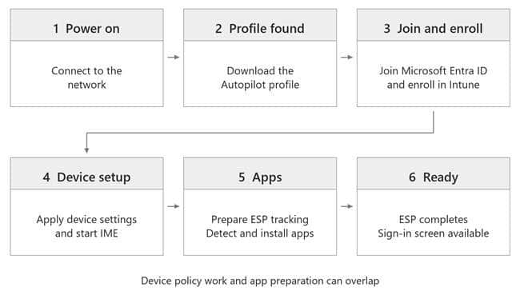
Why the IME Calls Windows Before Installing Apps
Those gaps surrounded WMI calls that read or update Sidecar’s ESP tracking state. WMI is the Windows interface IME uses to reach that information. The calls are synchronous: the calling IME thread cannot continue until Windows returns.

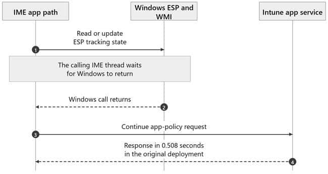
The October 29 log places two provider updates inside one long gap. It does not show which update consumed the time. To follow the individual Windows calls, we needed the later WPR trace.
Group Policy Event 1502 Reveals Three Ten Minute Delay in Autopilot Self-Deploying Mode
This is where the System event log became interesting. It contained three Group Policy processing records, each lasting nearly ten minutes.
| Group Policy event 1502 record | Processing time |
| 562 | 600141 milliseconds |
| 564 | 600172 milliseconds |
| 566 | 600265 milliseconds |
| 568 | 297 milliseconds |

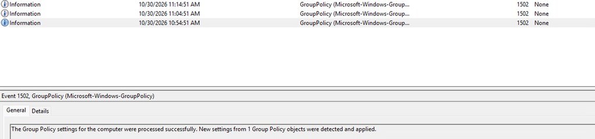
Three passes at almost exactly ten minutes each, followed by one that finished in less than a second. That gave us a much more specific pattern to investigate. The General message says the settings were processed successfully. The elapsed time is in Details. The Event Viewer capture above is from October 30 and shows the same ten-minute pattern in that separate run.

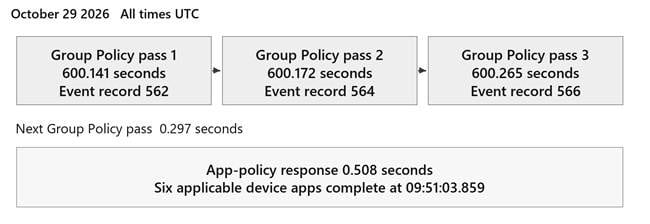
The SharedPCSetup.log supplied the next connection. In the October 30 deployment, its messages surrounded three ten-minute gaps, with LeaveCriticalPolicySection failures appearing after the waits. That file is normally at C:\Windows\SharedPCSetup.log. [2]
These are separate deployments. The October 29 records establish the original three slow Group Policy passes. The October 30 text log connects the same kind of delay to Shared PC work. The detailed WPR recording comes from a third run on November 6.
Why Intune Shared PC Settings Use Local Group Policy
Intune delivers the Shared PC configuration to Windows. The Shared PC Configuration Service Provider, or CSP, carries out the changes. Its implementation lives in SharedPCCSP.dll.
Microsoft’s technical reference explicitly lists local Group Policy settings configured by Shared PC mode. The education, power, and sign-in options also configure local GPO settings. An Intune-managed device can therefore be doing local Group Policy work without receiving a domain GPO. [2]
Shared PC edits and saves local GPO storage, then requests a refresh. GPSVC, the Group Policy service, processes that configuration. Saving persists the settings and updates the GPO revision; processing them is a separate operation. [3]
So yes, the policy can already be in the registry. That tells us the value was saved. It does not tell us that the rest of Shared PC processing has finished.

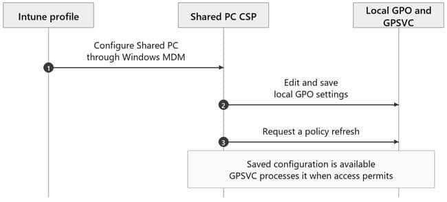
The LeaveCriticalPolicySection Error Comes After the Wait
LeaveCriticalPolicySection appeared in the Shared PC log after each ten-minute gap. The failure was logged when execution continued, and the code tried to clean up.

The older logs also contained a 0x80070020 sharing-violation failure during an education-policy update. That is a real update error. Its message alone doesn’t identify the resource involved or explain what started the wait.
That was as far as the text logs could take us. To explain the wait, I needed the WPR trace to show who held the policy section and which request arrived next.
Tracing the Shared PC Delay with WPR
The November 6 trace captured two long Shared PC operations and a fast one between them. The SharedPCSetup.log excerpt below is from the earlier October 30 run.
| November 6 operation | Start UTC | End UTC | Elapsed |
| Shared PC with OneDrive sync | 13:30:31.160 | 13:40:31.221 | 600.061 seconds |
| Education policy operation | 13:40:31.371 | 13:40:31.413 | 0.042 seconds |
| Power policy operation | 13:40:31.440 | 13:50:31.462 | 600.021 seconds |

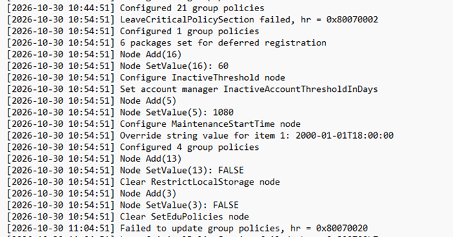
GPTrace recorded a reader held for about 600 seconds and named omadmclient.exe, the Windows MDM client, as its owner. The event header can belong to GPSVC; the owner named in the message identifies whose reader was being recovered.
The trace calls these policy sections readers and writers. A reader temporarily prevents Group Policy from starting its exclusive processing. GPSVC needs the writer side to do that processing. A reader here does not make registry access read-only. Shared PC can edit and save local GPO storage while holding it. The lock coordinates Group Policy processing.
Multiple readers can normally run together. However, once a writer is waiting, the inspected GPSVC code makes new readers wait behind it. This allows the writer to get a turn. Before following that queue, I needed to understand why the Windows MDM client was holding a reader in the first place.
How MDMWinsOverGP Changes Windows Policy Processing
The MDM diagnostics resolved ControlPolicyConflict/MDMWinsOverGP to 1. Event 813 recorded that value at Information level: a policy being set, not a failed command. The registry exports also contained _ProviderSet and the winning enrollment provider. The flag was already set before the Shared PC work began.
In Event Viewer, these MDM records are under Applications and Services Logs, Microsoft, Windows, DeviceManagement-Enterprise-Diagnostics-Provider, Admin. The Group Policy 1502 records are under Windows Logs, System.

MDMWinsOverGP gives supported Policy CSP settings precedence over their equivalent Group Policy settings. Its documented precedence scope is Policy CSP. The connection to the separate Shared PC CSP in this case comes from the Windows configuration manager code around the transaction. [4]
Inside configmanager2.dll, MdmWinsOverGp_BlockGp calls MdmWinsOverGp_IsMdmOverrideSet. That helper reads ControlPolicyConflict/MDMWinsOverGP through PolicyManager_GetPolicy. The returned policy DWORD is separate from the API success or failure result.
After a successful read, a zero flag skips these policy-section acquisitions. With a nonzero flag and valid empty handles, BlockGp enters the user policy section and then the machine policy section. CConfigManager2::ExecuteBatch keeps those sections while executing the transaction, then runs the release path afterward.

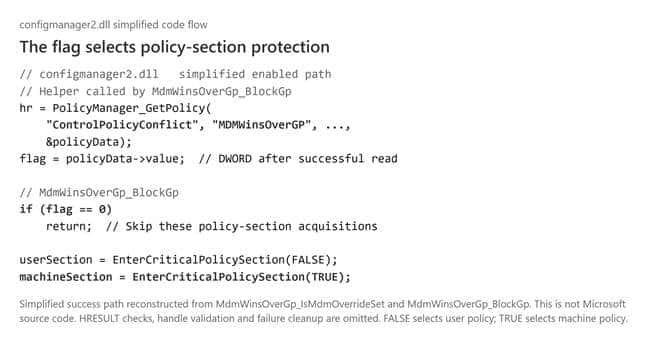
The WPR acquisition stack matched that exact code path. The outer reader was acquired through MdmWinsOverGp_BlockGp. This tied the setting to the lock actually held in the reproduction.
Event 881 records a mapped GP operation being blocked under MDMWins. In the October 29 records, record 532 shares its ActivityID with System Event 1502 record 562, linking the OneDrive operation to the first slow pass. These events appeared as processing resumed; their count does not measure ten-minute waits.

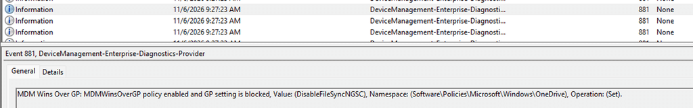
For Windows Update specifically, there is now a better option. The new IgnoreWindowsUpdateGroupPolicies setting allows Windows Update to ignore existing Group Policy settings entirely, without relying on MDMWinsOverGP.
Why the Shared PC Worker Cannot Get Its Policy Reader
Shared PC did its local GPO work on another thread in the same omadmclient.exe process. The main MDM thread waited for that specific worker to finish while holding its outer reader.
The first two worker batches acquired their own readers, edited and saved the local GPO, requested refresh, and released their readers. The refresh requests returned in milliseconds.
Then the timing changed. GPSVC queued a writer before the next Shared PC reader request arrived.

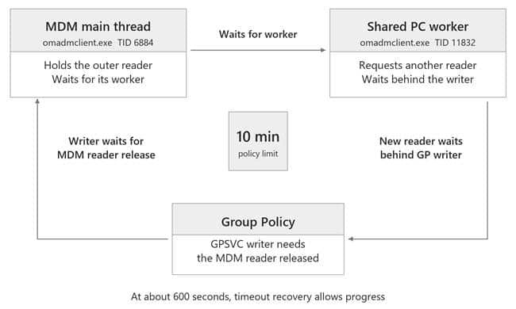
The WPR trace shows the order of those requests.
| November 6 UTC | What the trace records |
| 13:30:31.156001 | Main MDM thread holds its machine reader |
| 13:30:31.195828 | GPSVC queues a writer |
| 13:30:31.195904 | Previous Shared PC worker reader is released |
| 13:30:31.196256 | Shared PC requests its next machine reader |
| 13:30:31.196595 | GPSVC records that the new reader must wait |
The next Shared PC reader was behind the waiting writer. The writer needed the main MDM reader released. The main MDM thread was still waiting for Shared PC to finish.
Following Shared PC Through the Windows DLLs
I checked the compiled Windows instructions and Microsoft public symbols against the captured stack offsets. The flow below separates the main MDM thread from the Shared PC worker, so we can follow the handoff without reading assembly instructions.

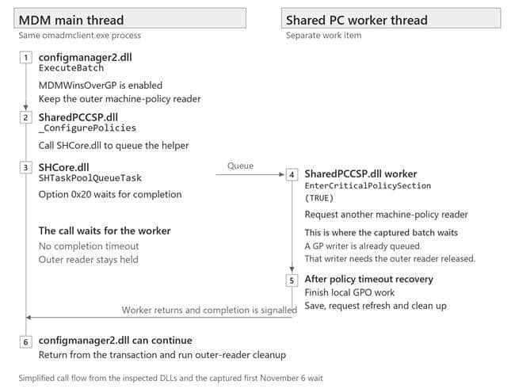
SharedPCSettings::_ConfigurePolicies queues its worker through SHCore.dll’s SHTaskPoolQueueTask with option 0x20. That option waits for worker completion without a timeout. The completion event is signalled only after the worker returns.
The worker itself calls EnterCriticalPolicySection before opening and editing the local GPO. In the stalled OneDrive-specific batch, it had not yet reached the value write. TRUE selects machine policy; the trace identifies the request as a reader.
The Shared PC code also explains the enabled marker in the registry. In the OneDrive-enabled mode, it can write SharedPCMode=1 before finishing the common policy batch and the OneDrive-specific batch. That marker can already exist while later work is still waiting.
This did not require opposing OneDrive settings. Both collected assignments requested DisableOneDriveFileSync=0, consistent with the Shared PC override. Provider, NodeCache and diagnostic mapped-value records establish those assignments.
The code and trace point to a Windows locking bug involving the MDM configuration manager and Shared PC worker. The parent keeps its reader while waiting for a worker whose next reader can queue behind a writer. A Windows repair would need to break that dependency.
Why Shared PC Processing Resumes After Ten Minutes
Microsoft documents a maximum ten-minute holding time for the policy section. The inspected API helper also supplies 600000 milliseconds as its timeout. [5]
Around 13:40:31.205, the trace recorded forced-reader recovery naming omadmclient.exe. At the same boundary, the worker’s request timed out and logged Timed Out Continuing. It continued with GPLOCK_TIMEOUT_HANDLE, a special timeout marker rather than a normally acquired reader.
The worker could proceed with its remaining work. Its later Leave call encountered that timeout marker. The inspected cleanup branch returns failure without setting a fresh last-error value, so an older thread error can appear in the Shared PC cleanup message. That explains why the Leave error alone cannot identify the initiating failure.
The next education-policy operation finished in 42 milliseconds. Its worker obtained a reader before GPSVC queued the next writer. The power operation got the opposite order and spent another ten minutes waiting.
The education setting was false in both diagnostic collections. Clearing its local policy entries still requires work. The fast reproduction was not caused by leaving that setting out.
The older deployment recorded three slow passes, while this trace recorded two. The reproduction shows exactly how the ordering allows one batch through and delays another. The older records do not contain enough thread detail to identify its precise extra occurrence.
With that waiting order established, we could return to IME. Its first Windows call enumerated ESP policy-provider information. The later call updated tracked-resource information.
Both calls reached the MDM WMI provider, then configmanager2. Their user-policy acquisitions were quick; their machine-policy requests waited behind the queued writer.The IME had to wait for those Windows calls before continuing Win32 preparation.

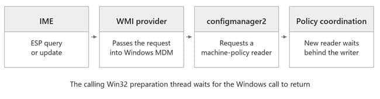
| IME operation on November 6 | IME caller wait interval UTC | Elapsed |
| Read ESP provider information | 13:31:03.443 to 13:40:31.305 | 567.862 seconds |
| Update tracked-resource information | 13:40:31.469 to 13:50:31.578 | 600.109 seconds |
IME joined the first wait after it was already underway. That is why its logged call lasted less than ten minutes.
The October 30 logs showed HealthScripts executing after the first wait had begun. Three packages produced five PowerShell executions, including detection, remediation and a post-remediation check; one detection script made real WinRE changes. The November 6 process records also show HealthScripts running during that run’s first wait. Its separate scheduler and execution path could continue while Win32 preparation waited.
The ordinary platform PowerShell workload received zero assigned policies in these logs. Microsoft documents that Sidecar ESP app tracking covers Win32 apps rather than PowerShell scripts; that does not mean every PowerShell workload bypasses ESP. [6]
When Win32 App Detection and Installation Resume
The last long IME call in the November 6 trace returned at 13:50:31.578. Custom Win32 detection started at 13:50:33.477. The first captured IME Win32 installer after that release was VC_redist.x86.exe, launched by IME at 13:51:01.449. The x64 installer followed at 13:51:24.461.
Detection and installation are different milestones. The trace shows the app path moving forward once the blocked Windows calls return. It does not cover all six apps completing in that reproduction; the 09:51:03 completion belongs to the original October 29 run.

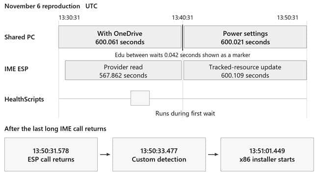
The October 30 logs also contained two later WMI queries that each reached a five-minute timeout. Those application-side query timers are separate from Group Policy’s ten-minute holding limit.
How Autopatch Edge Update Enabled MDMWinsOverGP
That still left the source of MDMWinsOverGP to explain. Checking the assigned profiles confirmed it: the Autopatch Edge Update profile configured the flag to 1.
The screenshot below shows MDM Wins Over GP alongside Microsoft Edge Update. It shows Beta with Target Channel override enabled; the deployment logs recorded Stable.

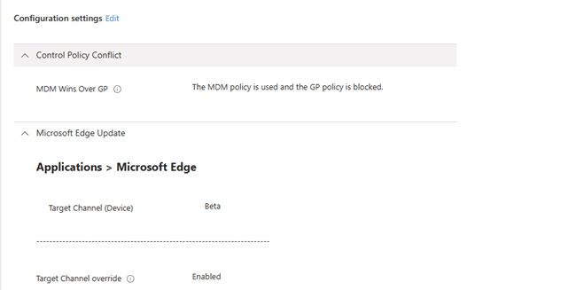
Autopatch generates Edge Update profiles for each group and deployment ring. [8] MDMWinsOverGP gives supported MDM policies precedence over equivalent Group Policy settings. [4] Protecting the managed update configuration from a conflicting GPO is therefore a plausible reason for including it. I could not find a published Microsoft explanation confirming that Autopatch design choice.
Another tenant investigation also found this setting in Autopatch Edge and Microsoft 365 Apps update profiles. [7]
The device logs also showed Edge ADMX processing immediately before MDMWinsOverGP was set, followed by the Stable channel configuration.

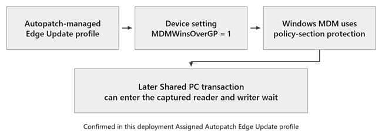
The profile name makes the effect easy to miss. MDMWinsOverGP is a device-level setting. Once enabled, the configuration manager reads it for subsequent batches. In our trace, that protection covered the Shared PC transaction. With it causing a big delay during the Autopilot enrollment
The Autopilot Shared PC Timeline from Enrollment to Apps
Now we can put the whole sequence together, from enrollment to the first Win32 apps. The detailed waiting order and recovery steps below come from the November 6 trace.

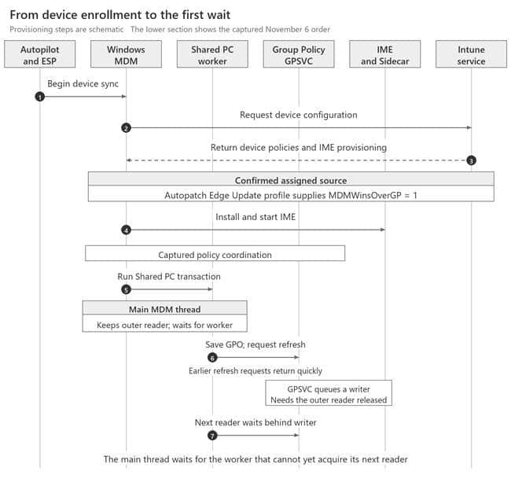
And the corrosponding Windows MDM –> IME HANDOFF zoomed in

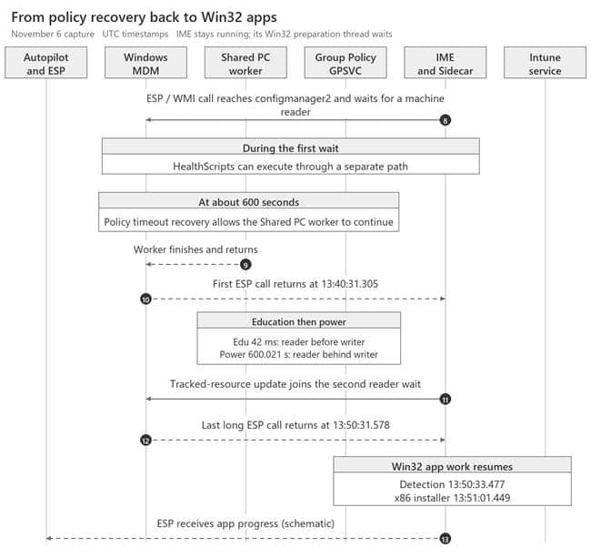
Excluding the Autopatch Profile Resolved the Delay
After we found out what could cause the delay, we excluded the shared devices from the Autopatch Edge policy. Excluding the affected Shared PC devices from the Autopatch Edge Update profile containing MDMWinsOverGP removed the delay

As shown above… the device that first took more over then 35 minutes… was now enrolled withn 7 minutes That confirmed a workaround for this deployment.
Troubleshooting the Same Autopilot Shared PC Delay
If you are seeing the same Autopilot delay, start by lining up the ordinary logs and registry state. Those checks can tell you whether a WPR trace is the next useful step.
| Check | What to look for |
| IME and AppWorkload | A long gap around ESP state calls before app content or installation work |
| System event 1502 | Repeated ProcessingTimeInMilliseconds values close to 600000 |
| Device configuration | Shared PC settings and an effective MDMWinsOverGP value of 1 |
This read-only query shows the device’s conflict setting and its provider metadata.
$base = ‘HKLM:\SOFTWARE\Microsoft\PolicyManager\current\device’
Get-ItemProperty -LiteralPath “$base\ControlPolicyConflict” |
Select-Object MDMWinsOverGP, MDMWinsOverGP_ProviderSet,
MDMWinsOverGP_WinningProvider
Matching those checks gives you a reason to record WPR. Confirm the owner of the outer reader, the queued writer, and the worker’s later reader request. The symptoms and registry value alone do not prove the same failure. Normalize UTC and local timestamps before lining up the evidence.
Summary
During Autopilot self-deployment, Windows stalled while applying Shared PC settings. The assigned Autopatch Edge Update profile enabled MDMWinsOverGP, causing MDM to retain a policy reader while waiting for its Shared PC worker.
Group Policy needed that reader released. The worker’s next reader request was waiting behind Group Policy. The tasks were waiting for each other.
Windows recovered after roughly ten minutes, but later batches could repeat the wait. The IME’s synchronous ESP calls joined the same wait, delaying Win32 app preparation. Remediation scripts could continue through a separate path.
The code and trace point to a Windows locking bug. Excluding the Autopatch profile containing MDMWinsOverGP resolved the delay in this deployment.
References and Evidence
[1] Microsoft EnrollmentStatusTracking CSP
[2] Microsoft Shared PC technical reference and troubleshooting | Shared PC troubleshooting
[3] Microsoft IGroupPolicyObject Save
[4] Microsoft ControlPolicyConflict Policy CSP
[5] Microsoft EnterCriticalPolicySection
[6] Microsoft Understanding and troubleshooting the Enrollment Status Page
[7] Sastu Insights How Windows Autopatch Tattooed My Edge Settings